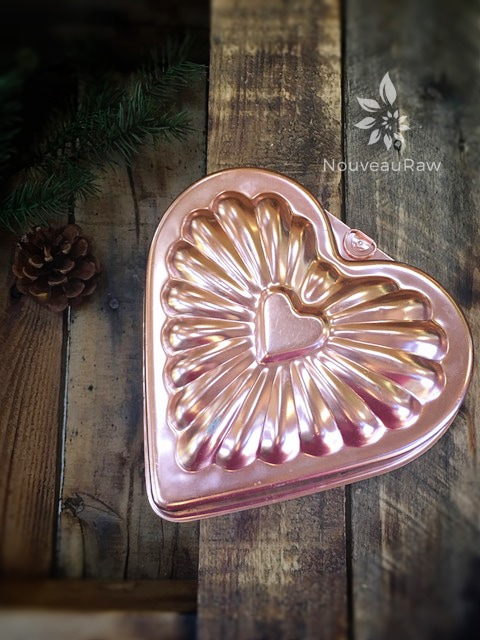
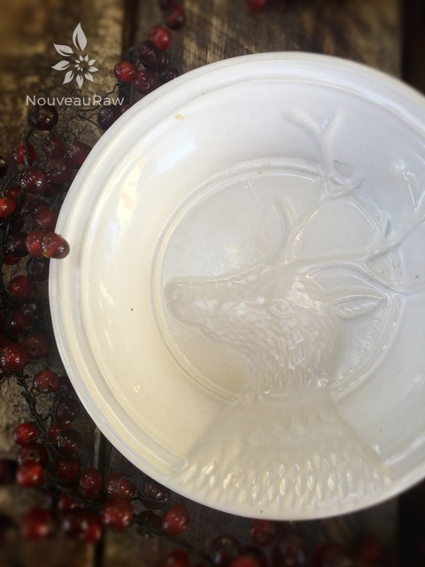
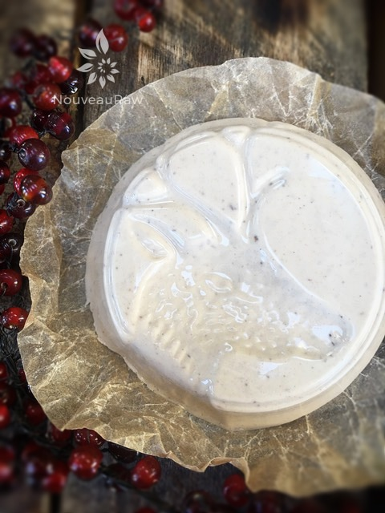
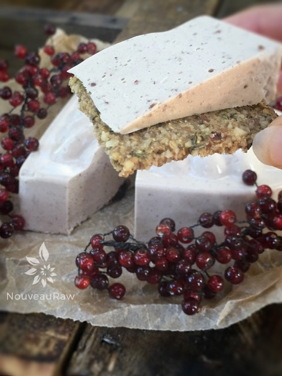

Sweet Cranberry Cheese

~ high-raw, vegan, gluten-free ~
A few years ago my husband surprised me by fulfilling one of my many, lifelong dreams… a chance to harvest cranberries! I won’t go into the whole exciting story about the experience, but I thought I would share a few pictures with you. Farm life suits me so well. I just love it! The type of harvesting that we did was called “wet harvesting” That is why I am standing knee-deep in water. hehe
Harvesting begins the day before the farmer actually collects the berries as he pumps water into the cranberry fields, up to about 18 inches. These bogs are impermeable, specifically created with layers of various growing mediums–so flooding them is not difficult.
Once flooded the farmer drove a machine around, fondly called ‘egg beaters’ which were used to agitate the waters. This process separates the cranberries from their vines. Because cranberries grow with a little pocket of air inside them, they float. All loosened berries then come to the surface of the water.
This is where our hard labor came into play. We were handed what I refer to as “long-handled squeegees.” With those, we had to corral the cranberries to one end of the field. Cranberries were then vacuumed up a conveyor belt and dumped into trucks to be shipped off to the processing plant.
Here is a fun tip… You can tell a good berry by its vibrant red color as well as its bounce-ability. Quality berries are firm and springy and bounce. Who knew?! This was an amazing experience. Thank you, sweetheart, for always making my dreams come true!
My husband was pretty insistent that I share with you all just how wonderfully this cheese pairs with the Flaky ” Club” Crackers. He should knowLol he ate them ALL! lol It just tickled me pink. I should point out this recipe doesn’t remain 100% raw with the agar in it. After I boiled the agar and added it to the blender, the temperature read 138 degrees (F). Once in the mold, it quickly dropped to 113 degrees (F). I used a thermal gun to test it.
yields 2 cups cheese batter
On stove top:
In blender:
- 1 cup raw cashews, soaked 2 hours
- 1/4 cup fresh orange juice
- 1/4 cup water
- 1/2 tsp ground ginger
- 1/4 tsp ground cinnamon
- 1/4 tsp ground nutmeg
- 1/8 tsp Himalayan pink salt
- 1/2 cup dried sweetened cranberries
Preparation:
Cheese base:
- Have the “cheese” mold(s) set aside and ready.
- This batter will create a little over 2 cups of cheese. I recommend pouring 2 1/4 cups of water in the molds that you are thinking about using, just to make sure that it will hold all the batter.
- You don’t need to oil or line the mold.
- Keep in mind that whatever impressions are in your container… it will leave that impression on your cheese. The last batch of cheese that I made said, “Recycle” on it. haha
- Soak the cashews, rinse and drain.
- The purpose for this is just to soften them so you can blend them to a smooth texture.
- It also reduces the phytic acid which will take a load off of your digestion.
- In a high-speed blender place the cashews, orange juice, water, ginger, cinnamon, nutmeg, and salt.
- Blend until it reaches a smooth consistency.
- This can take several minutes, depending on the blender.
- Add dried cranberries and blend for about 30 seconds, long enough to break them up a bit into the batter. Set aside.
Agar mixture:
- In a small pan combine water and agar.
- Bring to a boil then reduce the heat and simmer, often stirring with a whisk, until completely dissolved, about 5 to 10 minutes.
- Pour the agar mixture in the blender with the other ingredients and process until combined, scraping down the sides of the blender jar as necessary.
- You will need to move quickly. Agar sets up fast.
- Pour the batter into the containers that are set aside.
- Gently and carefully tap the container on the counter top to bring up as many bubbles as you can.
- Cool uncovered in the refrigerator.
- When completely cool, cover and chill several hours.
- Store covered the fridge for up to 14 days.

This is a mold that I picked up at a second-hand store. I knew as soon as I saw it that I wanted to make a vegan agar cheese in it.

I had a little extra cheese batter left over that wouldn’t fit in the heart mold… scrambling for something to get it into before it started to set up… I grabbed this little bowl. You can see the impression in it. I love how it transferred to the cheese.


© AmieSue.com